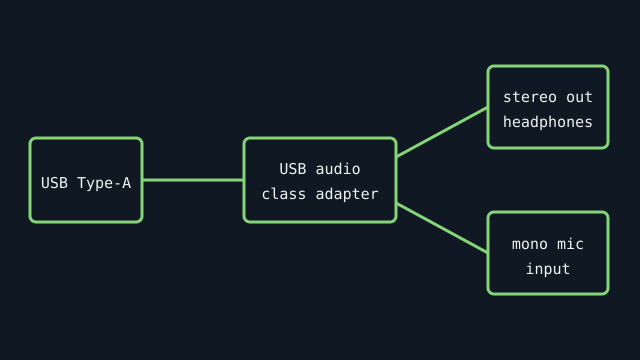

[ INDIVIDUAL COMPONENT // SOUND HARDWARE ]
Sabrent AU‑MMSA
A bus-powered USB external stereo sound adapter with USB Type-A, stereo output, and mono microphone input. The manufacturer page identifies its USB Audio Device Class 1.0 driverless behavior.

Specifications
| Product ID | Sabrent AU-MMSA USB External Stereo 3D Sound Adapter (black model/product page). |
|---|---|
| Bus | USB Type-A, bus-powered; no external power supply required. |
| Connectors / I/O | Stereo headphone/output jack and mono microphone-input jack. |
| Codec / conversion | Sabrent identifies USB Audio Device Class Specification 1.0 compliance; the product page does not state the internal codec part number or ADC/DAC bit-depth/sample-rate ceiling, so those are not inferred here. |
| Drivers / OS | Manufacturer lists driverless operation for Windows 98 SE/ME/2000/XP/Server 2003/Vista/7/8, Linux, and Mac OS X. Later OS versions are not named on the source page and should be tested rather than assumed. |
| Variant compatibility | Check AU-MMSA label, jack arrangement, and package contents; similar compact USB adapters may use different codec silicon or headset wiring. |
Service & preservation
Photograph the model label and plug before cataloging; keep the small adapter dry and avoid side-loading the USB connector. For old systems, retain a capture of the USB descriptor and OS audio-device name, since the vendor does not disclose the codec IC.
Primary sources
- Sabrent — AU-MMSA official product pageManufacturer-confirmed connectors, class compliance, bus power, and listed driverless OS support.
- USB-IF — standards and document libraryStandards source for USB device classes; consult the USB Audio Device Class 1.0 document referenced by the manufacturer. Class compliance does not identify the adapter’s internal codec.